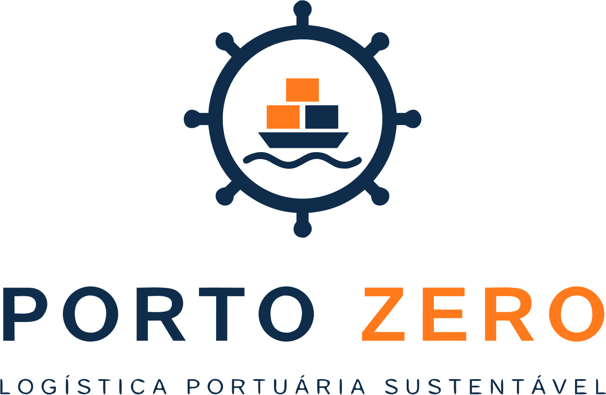

Logística portuária sustentável
Portos mais inteligentes.
Operações mais eficientes.
Um futuro marítimo sem desperdícios começa com decisões melhores — antes mesmo de o navio atracar.

Acessar o dashboardEficiência portuária, futuro sustentável.
O tempo de espera no entorno portuário pode significar mais combustível consumido, emissões adicionais e recursos operacionais mal aproveitados.
Sem visibilidade integrada das chegadas, dos berços e das operações de carga, coordenar o fluxo de embarcações se torna um desafio para toda a cadeia logística.
Valor ilustrativo apresentado no conceito do projeto para dimensionar o custo potencial da espera de um navio. Validar a fonte antes de publicar como dado factual.
O consumo de combustível durante a espera pode aumentar a pegada de carbono da operação.
Uma programação mais coordenada ajuda a identificar conflitos e reduzir esperas evitáveis.
Os valores numéricos de impacto devem ser acompanhados de fonte, período e metodologia antes de serem utilizados em comunicação pública.
O Porto Zero é uma proposta de plataforma digital de inteligência logística portuária. A solução organiza informações de chegada, permanência e operação dos navios para apoiar decisões mais eficientes e sustentáveis.
Ao conectar programação operacional e indicadores ambientais, ajuda a transformar dados em ações — com potencial para reduzir atrasos, custos e emissões evitáveis.
Descubra como funciona →Mais clareza para planejar, coordenar e acompanhar cada etapa da estadia do navio.
Organize horários previstos, janelas de chegada e berços designados em um cronograma visual.
Acompanhe entradas, saídas e tempo planejado no porto para dar mais previsibilidade à operação.
Visualize informações por embarcação, berço e empresa de carga para facilitar o alinhamento operacional.
Consulte chegadas programadas e estadia média planejada para identificar oportunidades de melhoria.
Estruture o acompanhamento de emissões estimadas e avalie cenários para operações de menor impacto.
Exporte a programação e compartilhe informações para apoiar a tomada de decisão e a prestação de contas.
Uma logística melhor coordenada pode beneficiar armadores, terminais, empresas de carga e o ambiente portuário.
Chegadas planejadas em maior sintonia com a disponibilidade operacional.
Informações organizadas para apoiar o planejamento de toda a cadeia.
Indicadores para revelar gargalos e oportunidades de melhoria.
Visibilidade sobre o impacto ambiental e caminhos para reduzi-lo.
PORTO ZERO
Vamos transformar a forma como os navios chegam, as operações se organizam e o futuro marítimo se constrói.
Quero conhecer o Porto Zero → Endereço de contato ilustrativo — substitua pelo e-mail oficial do projeto antes de publicar.